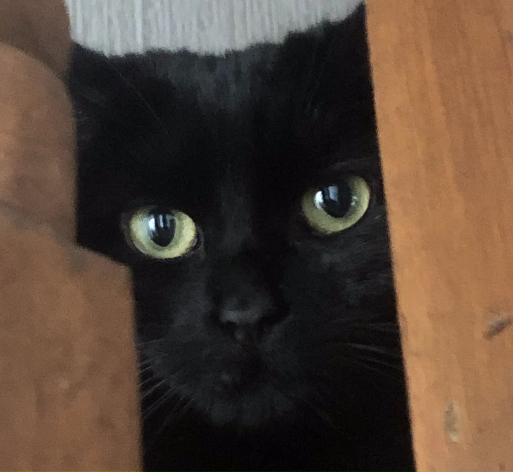

Oops!...I did it again!
[Jak]: Is this a story about one of Nikita's accidents?
[Nikita]: Hey! I resent that! You know I've been going outdoors.
[Kuma]: Are we letting her chat on here then?
[Jak]: Doesn't seem like we have much choice...here or anywhere else.
[Kuma]: Oooh...jealous!
[Kuma]: Anyway, it's not about Nikita. This one's all about me. You must have seen my offerings.
[Jak]: You always go outside. That litter tray never gets used. And we'd have noticed if you'd gone anywhere else.
[Kuma]: Why are dogs so obsessed with bodily functions?
[Jak and Nikita Together]: And cats!
[Kuma]: Hmmm. Yes. Well. Anyway.
[Kuma]: I've started hunting again. I was quite adept at it when I first arrived, but with the the colder, darker days and nights I didn't fancy it really.
[Jak]: And the fact that you get so well fed. I mean, you get lunch. Me and Niki don't!
[Kuma]: Jealous?
[Nikita]: Grrrr!
[Jak]: Don't rise to the bait. Tell us the story then.
[Kuma]: I've been leaving some mice around. They're for my humans not you, by the way.
[Jak]: I'm not sure they appreciate it. I've heard the complaints...
[Kuma ignoring Jak]: They're quite easy to catch. I'm fast after all. Have to be...dodging you two...well Nikita anyway.
[Kuma]: But last week I struck lucky and caught a bird. Now they're a challenge. But worth it. Very tasty! I scoffed the lot right by the front door.
[Jak]: We knew something had happened even though we couldn't spot any leftovers. Ew! Did you eat the feathers as well?
[Kuma]: You eat week old sandwiches left in the park. You've no place commenting about my eating habits!
[Nikita]: Hope you didn't get dinner as well after that. that would be...
[Jak and Nikita Together]: Unfair!